Basics
With a few exceptions, most coax is well made and will provide years of service if you follow a few basic rules. What you read here is pointed toward the mobile operator, but the same basic information applies to base station use too. There are a few special considerations when coax is used in a mobile installation, and those are covered specifically below.
The Cablematic coax prep tools listed in the Preparing the Coax section may be ordered from DX Engineering. These tools are some of the best money can buy and make proper stripping of coax a simple job. However, they will not strip certain types of coax (see below).
Unfortunately, the lowly PL-259 connector is never given a second thought. If it were, those $1 hamfest specials wouldn't sell like hotcakes. By the time you finish reading this article, you'll know why good-quality connectors are so important to a long-lasting, trouble-free installation.
Connector Alternatives
There are two viable alternatives to PL-259s, albeit somewhat more expensive.
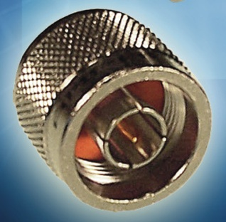
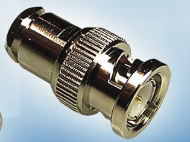
A few important notes about both alternatives. They're both available in 50Ω and 75Ω versions, and the two are not interchangeable. The versions for RG8X-sized coax (~0.242" OD) are typically 75Ω, though 50Ω versions exist. There are special versions for double-shielded coax (RG-223 and RG-214) that are not compatible with single-shielded cable. Verify what you're ordering before you buy.
Almost all transceivers now come with an SO-239 chassis connector because PL-259s are less expensive and universally available. The PL-259 is the practical choice for most installations — but you have to do it right.
Coax Selection
Coax comes in many configurations. Center conductors can be solid or stranded. Dielectrics can be solid, foam, or air. Shields can be solid, corrugated, copper braid, silver braid, or aluminum in various configurations. Outer coverings are usually PVC or polyethylene. Nominal impedance runs from 35 to 125 ohms; the standard values are 50 and 75 ohms.
Amateurs typically lump coax into three categories: RG-8 (~0.405" OD), RG-8X (~0.242" OD), and RG-58 (~0.195" OD). However, these designations are far from standardized — there is no mil-spec on civilian coax. The ARRL Handbook lists eleven types of RG-8, six types of RG-8X, and seven types of RG-58. Relying on the designation alone is not prudent.
Why Not RG-8 in a Mobile?
For mobile use, RG-8 sized coax can be eliminated fairly quickly. It's stiff, making installation difficult in the tight confines of a mobile. Its lower loss characteristics don't mean much either — the difference in loss between 10 feet of RG-8 and 10 feet of RG-8X (a typical mobile run length) is a fraction of a dB. And RG-8X can easily handle 500 watts even at elevated SWR.
Two things to remember about RG-8X: the minimum bend radius is about 3 inches, so routing it through a trunk-lip mounting bracket is a no-no. And since it is easily crushed, routing it through a door or truck seal is equally destructive. Either mistake will ruin the coax invisibly from the outside.
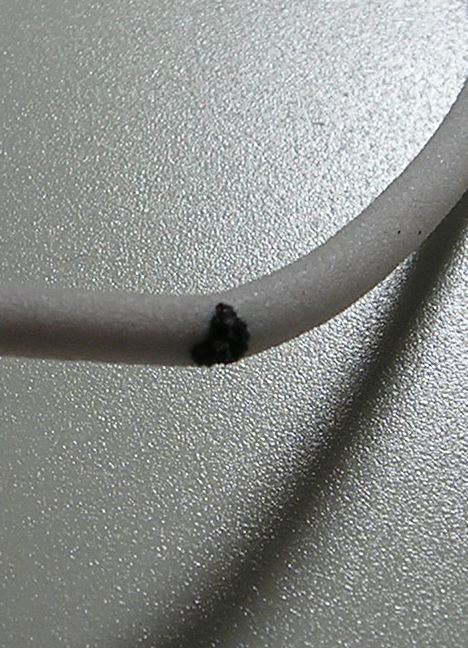
Common Mode Choke from Coax
Common mode current is almost a given in a mobile installation, especially with abbreviated mounting schemes (lip, clip, and mag mounts). The usual way to deal with common mode is to wind a choke using a Mix 31 split bead. DX Engineering sells a package of 5 for approximately $30 each.
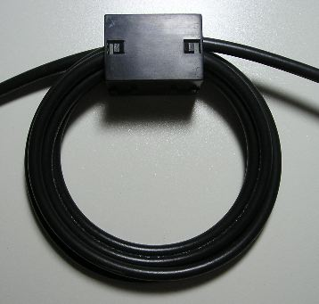
The resulting 6-turn choke exhibits an impedance of about 2.2 kΩ at 10 MHz. If you're very careful, 7 turns of RG-8X can be wound through a 3/4-inch ID bead, producing about 2.7 kΩ. If you need more impedance (lip, clip, or mag mount), simply snap on a second bead to nearly double the impedance. Common mode chokes belong outside the vehicle — everything between the choke and the vehicle interior can act as an antenna for vehicle RFI.
Teflon-insulated coax and double-shielded coax provide no real benefits for the average amateur — to say nothing of the additional cost and connector complexity. The one exception: if ambient temperature exceeds 70°C (158°F), Teflon is the preferred choice. But subjecting your transceiver to temperatures that high is financially inadvisable regardless of the feedline you use.
The PL-259
Without doubt, the single most prevalent problem in amateur radio is caused by the PL-259. They're typically poorly or incorrectly soldered (if at all), and the coax preparation is almost never done properly. Too many amateurs blame station equipment and antennas for problems that are actually caused by a cheaply made, incorrectly installed PL-259.
Connector Quality Matters
So-called Teflon-insulated connectors at bargain prices are almost certainly polypropylene, not genuine Teflon. When you try to solder them, the insulator melts. Genuine Teflon-insulated PL-259s with silver-plated shells (Amphenol part number 83-822, Mouser 523-83-822) cost about $5 each in quantity. Few amateurs will pay that much for a PL-259 — but compared to the cost of troubleshooting a failed connector during Field Day, it's cheap insurance.
The Amphenol 83-1SP-1050 has an Astroplate body and shell. Astroplate is extremely difficult to solder — it requires an iron with a lot of latent heat. The 83-1SP-RFX has a Japanned (nickel-based alloy) finish. They're actually worse than the Astroplate version and all but impossible to solder properly. Buying cheap connectors costs more in the long run than good ones ever will.
Reducing Sleeves
Reducing sleeves are required for both RG-58 (0.192" OD) and RG-8X (0.242" OD) coax. For RG-58, the correct Amphenol part number is 83-185 (Mouser 523-83-185). For RG-8X, 83-168-RFX sleeves are available but have a Japanned finish that is very difficult to solder. Two solutions:
- Buff the reducing sleeve with a wire brush and pre-tin it. Be careful not to apply too much solder or you won't be able to screw it into the PL-259 body.
- Buy the 83-185 silver-plated sleeves and drill them out to 0.25 inches using a drill press and vice. Take care, as brass tends to snatch badly.
PL-259s, SO-239s, and related connectors all fall under the generic classification "UHF connectors" — a designation that dates back to before WWII when 300 MHz was considered UHF. They were never designed as quick disconnects, but many people use them as such. Repeated on/off cycling causes loss of contact integrity over time. This is true of most RF connectors.
Soldering Tools
Don't scrimp on a soldering iron. To properly solder PL-259s, you need an iron with a lot of latent heat. The minimum is a 75-watt iron; 100 watts works even better. A soldering gun is not the right tool. Guns have very little thermal mass — the moment the tip touches a cold connector, the available heat is drawn away. While you're waiting for the material to reach soldering temperature, the coax core is being slowly damaged.
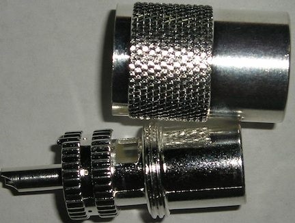
Proper soldering of PL-259s requires two irons: the 75-100W iron for the shield, and a smaller Weller pencil-type with an 850°F tip for the center conductor. It takes about 2 minutes total with good equipment.
Preparing the Coax
Never cut coax with wire cutters. Doing so distorts the core and center conductor, making installation of the PL-259 body difficult. If you don't have a proper cable cutter, a heavy-duty box cutter with a new blade will work. Lay the coax on a scrap of lumber and tap the box cutter through with a small hammer for a clean, even cut.
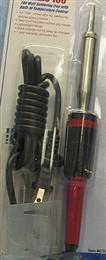
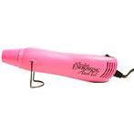
Always use good-quality, rosin-core solder. Never use acid-core solder on RF connectors. Kester 60/40 is a reliable choice. Avoid RoHS-compliant (lead-free) solder for coax connections — it doesn't wet nearly as well as lead-based solder. Buy a small roll of 1/8-inch, 60/40, rosin-core solder. It's too large for circuit board work but exactly right for connector work.
If you're using a reducing sleeve, pre-tin it carefully. Make sure no wire hairs protrude from the folded-back shield that could cause a short. Put the threaded barrel over the coax first, in the correct direction. Then slide the heat shrink well back before it can shrink prematurely. Carefully slide the PL-259 body over the coax and screw it down over the jacket. A small pair of channel-lock pliers works well for this. Stop as soon as you feel resistance. Once connectors are on both ends, use a DMM to check for shorts between center conductor and shield.
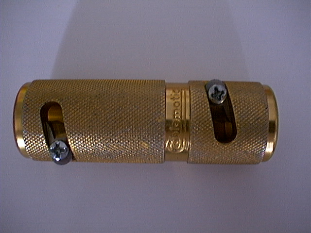
Soldering Step-by-Step
Do not pre-tin the coax shield before screwing on the connector. Pre-tinning might seem to speed up the process, but when the solder flows into the hole, most people stop — leaving the shield only partially soldered to the connector.
-
Solder the tip (center conductor) first. With good PL-259s, this takes 10 to 15 seconds. Use enough solder to close the connector tip entirely — this aids in keeping out moisture. Do not slop solder on the outside of the center pin.
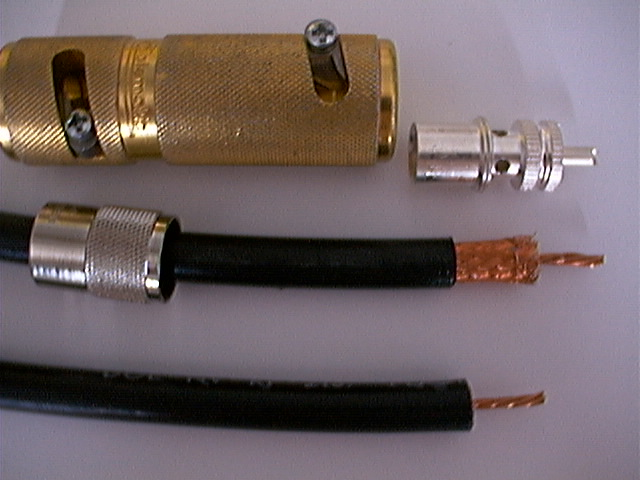
Soldering the center conductor. The smaller Weller pencil iron with an 850°F tip is the correct tool here. Close the tip completely with solder. - Let the tip cool before soldering the shield. This is important — applying heat to the shield while the tip is still hot risks melting the dielectric and causing a short.
-
Solder the shield. The flat part of the soldering iron tip should just fit inside the barrel groove of the connector. About 6 to 10 seconds after applying the iron, the barrel will be hot enough to accept solder. Apply solder at the edge of each hole so it flows into the shield. Close all four holes one at a time. Too much solder and it could flow to the tip and cause a short; too little and you won't have a good connection.
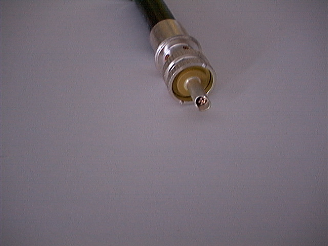
Soldering the shield through the barrel holes. This operation takes 20 to 30 seconds and requires both hands — one to apply solder, one to rotate the coax. This is why you clamp the iron in a vise. - Recheck for shorts and continuity after soldering is complete.
Crimp-On Connectors
Some folks scoff at crimp-on connectors because they believe the electrical characteristics are inferior to a properly soldered PL-259. Considering how some people solder PL-259s, that belief is misplaced. If properly installed, you virtually cannot measure the impedance difference between a good crimp-on and a correctly soldered PL-259.
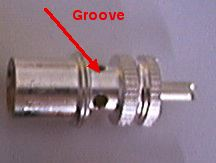
RF Connection sells some of the best crimp-on PL-259s available — silver-plated so they don't rust, available with a solder tip. Manual crimping tools range from about $50 to $145 depending on quality. Ratchet-type hand crimpers require good hand strength for a proper crimp. If you're not strong in the hands, a hydraulic tool is worth the expense.
Weather Sealing
Seemingly everyone uses vinyl electrical tape and/or coax seal on outdoor connections. The problem: no matter how well you cover the connection, moisture can still seep in. Vinyl tape removal becomes a sticky mess regardless of quality, and the adhesives on most vinyl tapes tend to corrode silver-plated connectors.
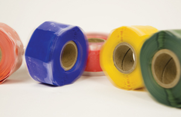
The best weatherproofing approach: properly solder the connector, close all the holes completely with solder, then seal the coax entry into the connector with polyolefin, dual-walled, adhesive heat shrink. PL-259 connectors that are properly installed this way are quite weather tight — not immersion-proof, but resistant to road spray. Rescue Tape over the assembly adds another layer of moisture protection. Avoid: friction tape, mylar tape, masking tape, duct tape, and packaging tape. None of them work for this application.
Odds & Ends
Salvaging PL-259s is a losing battle. The time and frustration aren't worth it. Scrimping on coax and PL-259s is a prescription for trouble, and it always happens at the most inopportune times — like Field Day.
There are several styles of screw-on-to-the-coax-cover PL-259s. They are never appropriate. Never use them.
Different runs of the same brand and type of coax may have different characteristic impedances. The nominal is 50 ohms, but the original designation for RG-8 was actually 52 ohms, and some brands measure closer to 52 ohms than 50. This isn't a concern for most applications, but it matters if you're using coax for phasing lines — especially at VHF. In that case, measure the actual impedance before cutting to length.
Modern Considerations
Weatherproof Connector Options
Since Alan originally wrote this material, the availability of weatherproof PL-259 alternatives has improved substantially. N-type connectors are now available from a wider range of antenna manufacturers, and some mobile antenna makers have begun supplying N connectors as standard. If your antenna and transceiver both accommodate N connectors, they are the better choice for a mobile installation — properly installed, they are genuinely waterproof in a way that no PL-259 can claim.
Low-Loss Coax for Short Runs
For typical mobile feedline runs of 15 feet or less, the cable loss differences between RG-8X, RG-58, and LMR-240 (an RG-8X-equivalent with superior loss figures) are in the tenths of a dB — not operationally significant for HF. If you're running VHF or UHF, the loss picture changes: LMR-240 or equivalent is genuinely worth the upgrade at those frequencies, particularly if your run exceeds 10 feet.
Routing Through Vehicles
The current generation of vehicles uses a lot of very tight passages and grommets for routing cables. If you're routing coax through a firewall or body grommet, RG-8X's minimum bend radius and crush sensitivity become very real constraints. Consider LMR-240 (roughly the same OD but with a more flexible construction) or drop to RG-58 for the portion of the run that must pass through a tight space — accepting the slightly higher loss of RG-58 in exchange for ease of routing and durability.